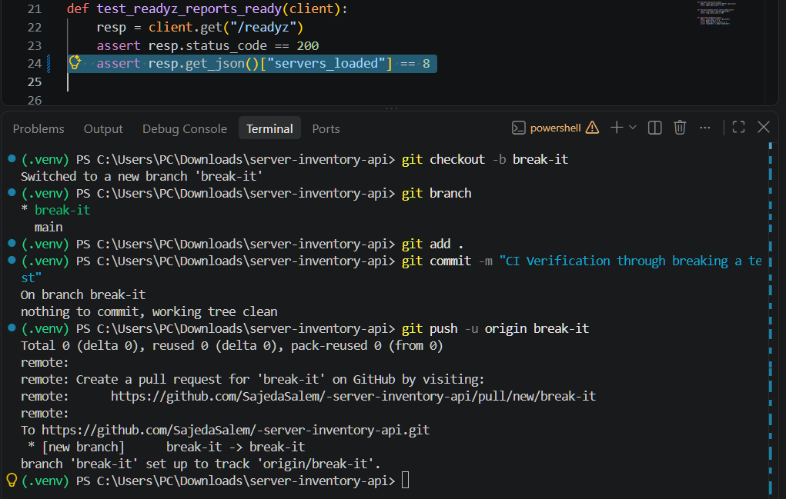
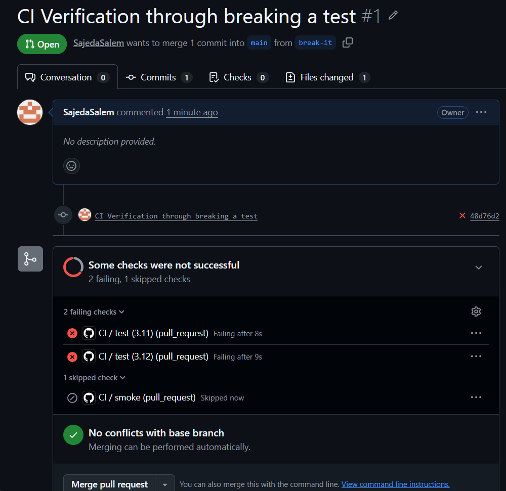

Health
GET /healthz
Checks whether the application is reachable and explicitly expects HTTP 200.
A Python Flask API surrounded by a repeatable Continuous Integration workflow with automated code-quality checks, multi-version testing, JUnit artifacts, runtime smoke tests and deliberate failure verification.
A test suite is only useful when it runs consistently. This project moves validation away from developer memory and local machine state into a repeatable GitHub Actions workflow. Relevant changes are checked in fresh runners through environment setup, linting, automated tests, multi-version compatibility, artifact preservation and runtime smoke testing.
The Server Inventory API manages a JSON-based inventory of nine example servers across production, staging and development. Inventory logic is separated from the HTTP layer, so both application logic and API behaviour can be tested independently. Health, readiness and version endpoints then give the smoke stage specific runtime conditions to validate.
| Endpoint | Purpose |
|---|---|
| GET /healthz | Confirms the application is running |
| GET /readyz | Confirms the inventory is loaded |
| GET /version | Returns the configured CI build version |
| GET /servers | Returns available servers |
| GET /servers/<name> | Returns a specific server |
| GET /stats | Returns inventory statistics |
A push to main validates code already reaching the branch. Pull requests targeting main are checked before merge, and workflow_dispatch keeps the same validation available on demand through the GitHub Actions interface.
name: CI
on:
push:
branches: [main]
pull_request:
branches: [main]
workflow_dispatch:Each execution starts on a GitHub-hosted ubuntu-latest runner. The repository is checked out, the required Python version is installed and project dependencies are loaded from requirements.txt. Pip caching allows later runs to reuse downloaded dependencies where possible. Because this setup is encoded in CI, validation does not depend on packages that happen to be installed on the developer's machine.
runs-on: ubuntu-latest
steps:
- uses: actions/checkout@v4
- uses: actions/setup-python@v5
with:
python-version: ${{ matrix.python-version }}
cache: "pip"
- run: pip install -r requirements.txtThe validation order is intentional. Before the test suite runs, flake8 performs static code-quality checks using the project's linting configuration. If the source violates those rules, the pipeline fails at the quality gate instead of spending time continuing through application tests with code that has already failed validation.
Once linting succeeds, pytest executes the automated tests. The -q flag keeps CI output concise, while --junitxml=report.xml creates a structured JUnit report that can be preserved outside the temporary runner. This means the stage validates both source quality and application behaviour, while also producing diagnostic output for later inspection.
- name: Lint with flake8 run: flake8 . - name: Run tests run: pytest -q --junitxml=report.xml
Instead of duplicating the complete test job, a matrix strategy generates independent executions for Python 3.11 and 3.12 from one definition. fail-fast: false is useful for diagnosis because a failure on one version does not cancel the other matrix run; both compatibility results remain visible.
strategy:
fail-fast: false
matrix:
python-version:
- "3.11"
- "3.12"
python-version: ${{ matrix.python-version }}Every test execution produces report.xml. The report is uploaded as a GitHub Actions artifact, which keeps the structured test result available after the temporary runner finishes. The upload uses if: always() deliberately: a failed test run is exactly when diagnostic output can be most useful, so the artifact should not disappear just because pytest returned an error.
- name: Upload test report
if: always()
uses: actions/upload-artifact@v4
with:
name: test-report
path: report.xmlThe second job, smoke, starts only after the test job succeeds. It runs on another fresh runner, so it cannot rely on the environment prepared by the test stage. The job repeats the necessary setup, launches the Flask API in the background and then communicates with the running application over HTTP. This adds a different kind of validation: not only whether functions behave correctly in tests, but whether the service can actually start and respond in a clean runtime environment.
smoke:
needs: test
runs-on: ubuntu-latest
- name: Start the API
run: |
python app.py &
sleep 5
- name: Check health endpoint
run: |
code=$(curl -s -o /dev/null -w "%{http_code}" http://127.0.0.1:5000/healthz)
echo "got $code"
test "$code" = "200"Checks whether the application is reachable and explicitly expects HTTP 200.
Goes deeper by confirming that the expected nine-server inventory has been loaded.
The two endpoints distinguish a live process from an application that is actually ready with its data.
During the smoke stage, GitHub's run number is passed to the application through APP_VERSION. The /version endpoint is then checked for the same value. This creates a simple trace from a GitHub Actions run to the application instance without hard-coding a new version directly into the source code.
env:
APP_VERSION: ci-${{ github.run_number }}
# Runtime check:
GET /version → ci-${{ github.run_number }}A CI pipeline should demonstrate failure detection as clearly as success. On a separate break-it branch, one test expectation was intentionally changed so the suite would fail. That branch was opened as a pull request against main. GitHub Actions detected the regression, exposed a failed check in the pull-request interface and the change was closed without being merged.


The workflow separates concerns so that source quality, compatibility, diagnostic reporting and runtime behaviour are validated for different reasons rather than collapsed into one opaque “build” step.
Tests validate logic and API behaviour. A second fresh runner proves that the application can start and answer real HTTP requests.
One maintainable workflow definition produces independent Python 3.11 and 3.12 compatibility results.
JUnit output is retained even when tests fail, keeping useful troubleshooting information available.
The CI run number reaches the application through configuration rather than source-code changes.
The project connected repository events, clean runners, linting, automated tests, matrix compatibility, artifact management, job dependencies, environment-based configuration and HTTP smoke testing into one repeatable process. The controlled failure test was especially valuable because it proved the pipeline could identify and surface an invalid change — not merely demonstrate successful builds.